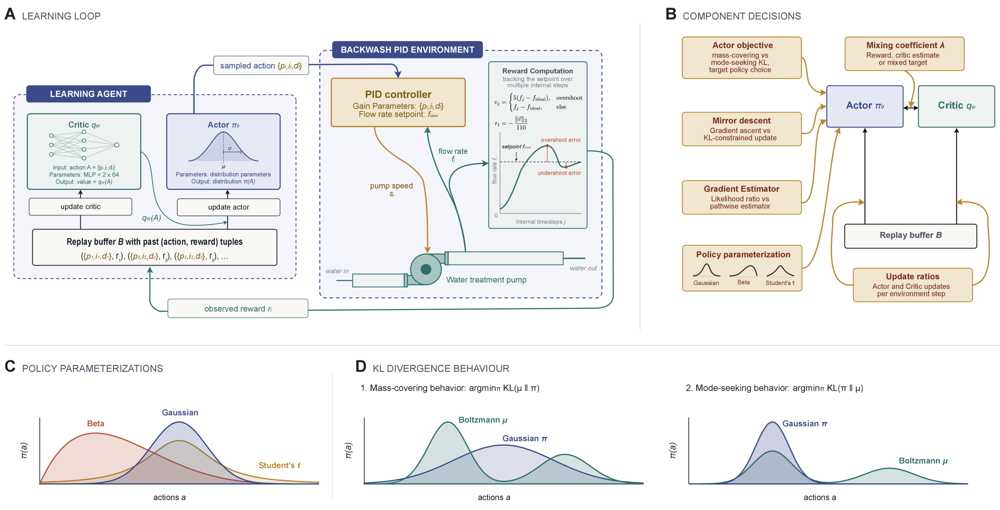
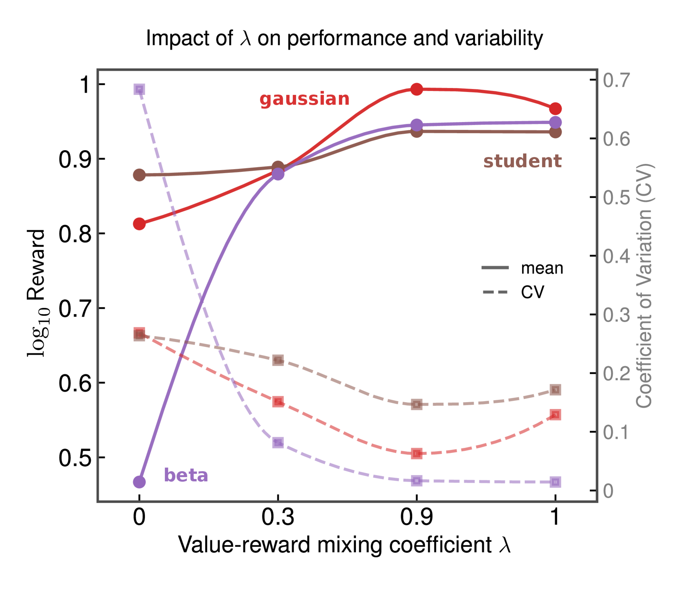
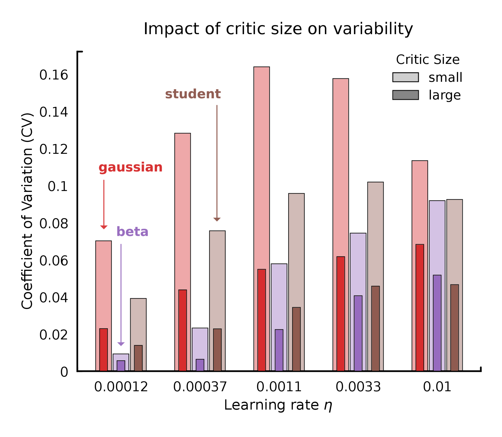
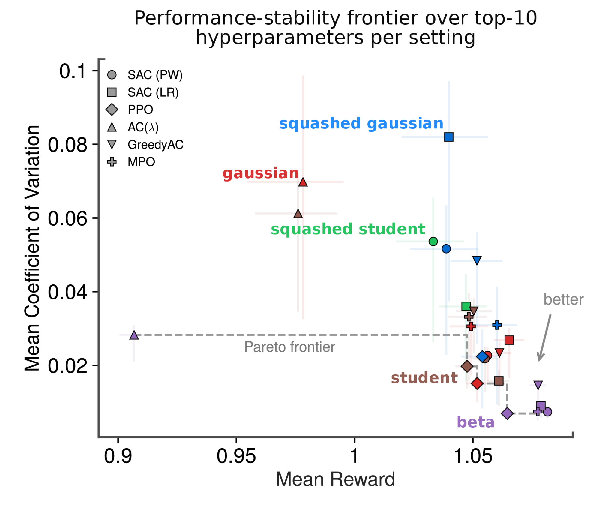
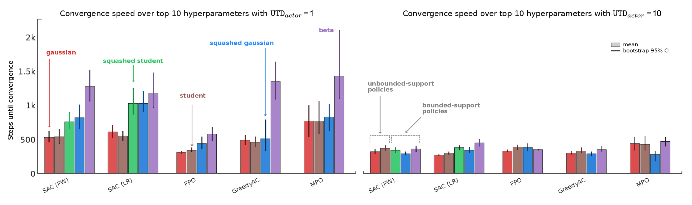
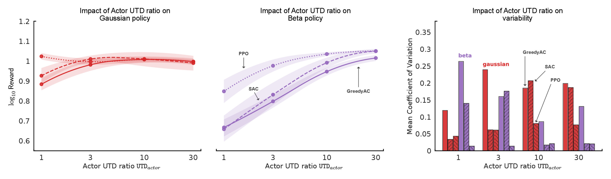
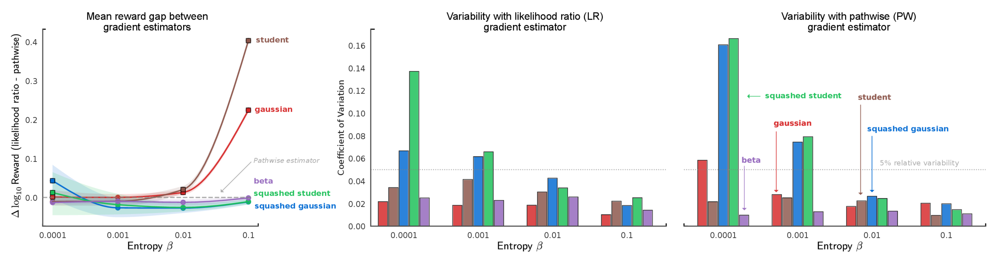
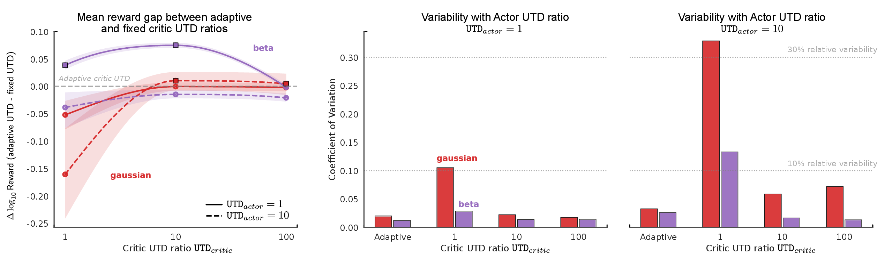
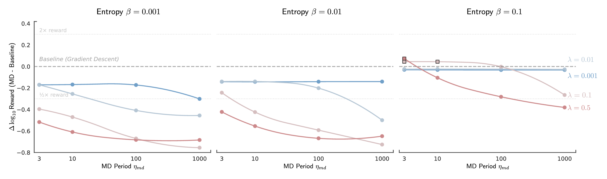

A Large-scale Empirical Study of Design Components for Practitioners
aUniversity of Alberta · bAmii · cGreat Bay University · dCanada CIFAR AI Chair · *Equal contribution
Reinforcement learning is increasingly being considered for controlling real-world systems, from fusion plasma and autonomous vehicles to drug discovery and drinking water treatment, where reliability is essential and tuning budgets are limited. Actor-critic algorithms share a set of design decisions, such as how the policy is updated, how it represents the distribution over actions, how its gradient is estimated, and how often it is updated relative to the value estimator. Using a control task derived from a real water treatment plant, we analyze over 33,000 experiments to determine how these components affect variability across runs and sensitivity to hyperparameters. Common defaults, such as Gaussian action distributions with pathwise gradient estimators, are among the least reliable configurations, whereas bounded distributions with adaptive update schedules remain robust across a wide range of settings. These findings offer empirical guidance to practitioners across scientific and engineering domains for understanding and making component-level decisions when adapting actor-critic methods to new real-world control settings.
To isolate the effects of individual components, we study a simplified PID tuning setting. Tuning PID controllers is a common task in engineered systems, where small changes in parameters can have large effects on overall stability and efficiency. The environment is constructed from data from a real water treatment system: the agent outputs PID gains for the backwashing pump controller, a classical PID loop drives the pump, and the reward summarizes the tracking quality over the rollout. Each rollout begins from a fixed state, reducing the problem to a continuous-action bandit and stripping away confounding factors such as long-horizon credit assignment and temporal state dependence.

We evaluate both the performance and stability of the component choices across hyperparameters. Performance is the mean reward across seeds (higher is better); stability refers to the run-to-run variability, measured by the coefficient of variation across seeds (lower is better). A reliable method should do well on both metrics. We study PPO, SAC, DDPG, MPO, GreedyAC, vanilla actor-critic, and REINFORCE, with Gaussian, squashed Gaussian, Student's t, and beta policy parameterizations. Select a conclusion below to read more details.
@misc{deconstructingac2026,
title={Deconstructing Actor-Critic: A Large-scale Empirical Study of Design Components for Practitioners},
author={Haseeb Shah and Lingwei Zhu and Adam White and Martha White},
year={2026},
eprint={2607.13274},
archivePrefix={arXiv},
primaryClass={cs.LG},
url={https://arxiv.org/abs/2607.13274},
}
AC(λ) interpolates between the critic's action-value estimate (λ=0) and the observed reward (λ=1) in the policy gradient. In our experiments, relying entirely on the critic (λ=0) led to high run-to-run variability across all policy parameterizations, with beta policies being particularly affected. This is likely due to value misspecification, introducing bias into the policy update.
Introducing even a moderate reward mixing (λ=0.3) recovers most of the performance gap while significantly reducing variability, with the best effect consistently observed at λ=0.9. Completely removing the critic contribution (λ=1) tends to either reduce performance or increase variability for Gaussian and Student's t policies. See the figure below for the effect of λ on performance and variability and the supplement for a more detailed breakdown across different hyperparameter and environmental noise configurations.

Evidence: reward-mixing sweep above · extended AC(λ) breakdown in the supplement · paper
Inaccurate critics increase run-to-run variability: some runs achieve good performance, whereas others fail, thereby reducing stability. There are several lines of evidence supporting this conclusion. Firstly, increasing λ in AC(λ) reduces the critic's contribution to the policy gradient. The figure in Conclusion 1 shows that higher λ values decrease variability across all policy parameterizations. Secondly, increasing the critic size increases the critic's representational capacity, reducing critic error as long as the critic is trained sufficiently to exploit this added capacity. Because our adaptive critic update trains the critic until its batch error falls below a fixed threshold, the larger network actually realizes this lower error. Consistent with this, the figure below shows that larger critic networks reduce variability across all policy parameterizations in AC(λ).
Finally, note that PPO in our non-contextual bandit setting does not require learning an action-value critic and, correspondingly, its configurations are among the most favorable in the performance-stability trade-off. Three of the four PPO configurations are Pareto efficient in the frontier of Conclusion 3 while the remaining one lies close to the Pareto frontier.

Evidence: critic-size sweep above, λ sweep, and the PPO frontier points · paper §Results
We aggregate results over the top-10 hyperparameters for each algorithm, including allowing different UTD per algorithm. In the figure below we observe two patterns. Firstly, the best region of the performance-stability frontier consists entirely of beta configurations, with five different algorithms clustering tightly around near-optimal performance. This region denotes configurations that have high mean reward and low variability across runs and hyperparameters. Secondly, except for AC(λ), no non-beta policy parameterization dominates any beta configuration. The variants of AC(λ) that perform worse are likely due to not sweeping over the actor UTD ratio in that setting.
Some Student's t and Gaussian configurations also lie on the frontier, but only in intermediate regions where they achieve lower mean reward but competitive variability. In contrast, squashed Gaussian, which is the widely-used default in SAC implementations, performs poorly. For a more detailed breakdown, see SAC with the PW estimator, SAC with the LR estimator, PPO, AC(λ) and GreedyAC in the supplement.

Evidence: performance-stability frontier above · per-algorithm sweeps in the supplement · paper
We group the squashed and beta policy parameterizations as bounded-support, and the clipped Gaussian and Student's t as unbounded-support. From the figure below, we observe that the effect depends on how strongly the action-space constraints are enforced by the policy parameterization. With the default actor UTD ratio of 1, the beta policy consistently learns the slowest among all algorithms, followed by squashed policies and then clipped policies. The clipped policies are based on unbounded densities and therefore can be optimized in a relatively unconstrained parameter space. The squashed policies enforce bounds through a smooth non-linear transformation, which introduces additional curvature and sensitivity near the boundaries. In contrast, the beta policy enforces bounds through its density, and its parameters couple together to control the location, shape, and skewness of the distribution simultaneously, making optimization more difficult.
Once we increase the actor UTD ratio (figure below, right), the differences in convergence speed among the various policy parameterizations largely disappear. However, if the critic is not sufficiently accurate, a high actor UTD could amplify the critic's errors and steer the policy towards poor solutions.

Evidence: convergence analysis above · paper §Results
Scaling the actor learning rate ηactor by k and the actor UTDactor by k are both ways to control how much the parameters are updated. We find scaling either has a very similar effect for the beta policy across the three critic learning rates ηcritic depicted in the figure below.
For a Gaussian policy, however, the behavior is different at high critic learning rates: increasing the actor learning rate produces a significantly stronger performance collapse compared to increasing the actor UTD ratio. This suggests that the Gaussian policy's instability stems from simultaneous fast updates to both the critic and actor networks, rather than from actor parameter movements alone. This indicates that the actor UTD ratio is a safer tuning knob.
Evidence: LR-vs-UTD scaling comparison above · paper §Results
UTDactor has different effects depending on the policy parameterization (figure below). For beta policies, increasing UTDactor from 1 to 30 significantly improves the mean reward and lowers run-to-run variability consistently across PPO, SAC and GreedyAC. In contrast, for Gaussian policies, the mean reward changes minimally while the variability increases significantly, rising by a factor of four for SAC and roughly doubling for GreedyAC and PPO.

Evidence: actor UTD sweep above · paper §Results
Most continuous-control codebases use the pathwise (PW) gradient estimator by default, often without exposing it as a tunable choice. Whether this is a good default, however, depends on the policy parameterization. PW gradients flow through the sampled action, so any transformation that distorts this path such as clipping or squashing can negatively affect the gradient signal. In contrast, the likelihood ratio (LR) gradients are unaffected by this issue, since they do not differentiate through the sampled action.
The figure below shows three regimes. Firstly, clipped policies (Gaussian and Student's t) suffer a significant drop in performance at higher entropies under PW, but remain robust under LR. This is likely because the high entropy pushes more sampled actions to the clipping boundary, where they contribute zero PW gradient. Secondly, squashed policies achieve similar mean rewards under both estimators, but a lower run-to-run variability under the LR estimator. Finally, the beta policy is essentially insensitive to the choice of estimator in both mean performance and variability, likely because its bounds are encoded in the density rather than controlled by a transformation, so there is no clipped or squashed path for the gradient to flow through. The practical implication is to treat PW as a choice rather than a default whenever the policy involves clipping or squashing, and to consider LR in those settings.

Evidence: estimator comparison above · per-policy SAC sweeps in the supplement · paper
Comparing the adaptive critic UTD ratio with the commonly used fixed critic UTD strategy, we observe that adaptive updating largely avoids the failure modes of fixed critic UTD ratios (figure below). The worst case is UTDcritic=1, which produces 11x higher run-to-run variability for Gaussian policies and 5x for beta under UTDactor=10, as well as lower mean reward across configurations. Higher fixed ratios of UTDcritic ∈ {10, 100} perform comparably; however, they require the practitioner to either know or tune the appropriate value in advance. The one case where the fixed ratio can outperform adaptive is beta with UTDactor=1; however, both perform poorly compared to higher UTDactor=10.
Overall, we find adaptive updating replaces the more sensitive UTDcritic hyperparameter with an easier-to-interpret error threshold ω, which can be set based on the magnitude of the critic loss. In principle, a threshold ω defined relative to a normalized reward scale should transfer across environments more naturally than a raw update count, whose appropriate value depends on batch size, critic's representational capacity, and the complexity of the environment.

Evidence: fixed-vs-adaptive comparison above · algorithm in paper §Materials & Methods · paper
In the figure below, we observe that increasing the mirror descent period ηmd generally resulted in similar or significantly worse performance. Increasing the mirror descent step size λ (where λ=1/τ) resulted in worse mean rewards at smaller entropies (β ∈ {0.001, 0.01}) but higher at the largest tested entropy (β=0.1). However, the mean reward at the larger entropy is still significantly lower than smaller entropies. Overall, the best performance is achieved at the smallest values of mirror descent stepsize λ and period ηmd. This indicates the stronger the mirror descent, the lower is the resulting performance.

Evidence: mirror-descent sweep above · full entropy breakdown in the supplement
PPO and AC(λ > 0.9) show improved robustness to higher learning rates when coupled with the beta policy (see the supplement). In the bandit setting, PPO has no critic, and we observe that the beta policy at lower actor UTD ratios can perform just as well as at higher ratios when the learning rate is tuned. In all the other settings, the beta policy struggled to learn unless the actor UTD ratio was increased.
Evidence: PPO batch-size and AC(λ) sweeps in the supplement
The relationship between learning rate and mean performance is typically similar to an upside-down parabola: with the best setting in the middle, and a poorer performance at the higher and lower extremes. We observe that increasing the actor UTD ratio can alter the shape of this parabola, and in some cases, reduce the sensitivity to learning rate hyperparameter. This implies that in certain settings, an arbitrarily chosen learning rate from a reasonable range is more likely to perform well. We observe this reduction in sensitivity with all the policy losses that we used to analyze UTDactor: SAC with both gradient estimators, PPO, GreedyAC and MPO (see the supplement).
However, the run-to-run variability depends on the policy parameterization. As ηactor is increased, the Gaussian, Student's t, and squashed policies generally exhibit higher variabilities, while the variability of the beta policy is reduced. Due to this, the reduced learning-rate sensitivity is useful only with the beta policy parameterization.
Evidence: per-algorithm learning-rate sweeps (SAC, PPO, GreedyAC, MPO) in the supplement
Across multiple policy losses, we observe that increasing the number of samples used to compute the policy gradient increases the performance and/or reduces overall run-to-run variability. In PPO, increasing the on-policy batch size increases mean performance, particularly at higher entropies. We do not observe an improvement in variability for PPO because it is already too small. In GreedyAC, increasing the number of proposal actions ηtop both improves the performance and reduces variability. Although the improvements are monotonic within our tested ranges, we surmise that there can be diminishing returns or adverse effects if these hyperparameters are increased further.
Evidence: PPO batch-size and GreedyAC proposal-action sweeps in the supplement